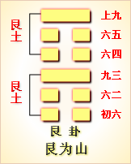

<!DOCTYPE html PUBLIC "-//W3C//DTD XHTML 1.0 Transitional//EN" "http://www.w3.org/TR/xhtml1/DTD/xhtml1-transitional.dtd">

<html xmlns="http://www.w3.org/1999/xhtml">
<head>
<meta content="text/html; charset=utf-8" http-equiv="Content-Type"/>
<title>周易第五十二卦：艮卦 艮为�?艮上艮下原文解释翻译-周易-国学�?/title>
<meta content="周易,艮卦,艮为�?艮上艮下" name="keywords"/>
<meta content="周易,艮卦,艮为�?艮上艮下，周易第五十二卦：艮�?艮为�?艮上艮下解释翻译�?（艮为山）艮上艮�?《艮》：艮其背，不获其身，行其庭，不见其人，无咎�?初六，艮其趾，无咎。利永贞�?六二，艮其腓，不拯其随，其心不快�?九三，艮其限，列其夤，厉，熏�? name="description"/>
<link href="css.css" media="screen" rel="stylesheet" type="text/css"/>
</head>
<body>
<div class="gxlayout">
</div>
<div class="gxlayout">
<div class="ihead">
<div class="title"><a>周易</a></div>
<ul class="more fl">
<li>当前位置:<a>国学梦首�?/a> &gt; <a>国学经典</a> &gt; <a>经部</a> &gt; <a>四书五经</a> &gt; <a>周易</a> &gt;  周易第五十二卦：艮卦 艮为�?艮上艮下原文解释翻译</li>
</ul>
</div>
<div class="gxbl fl">
<div class="latitle">

<h1>周易第五十二卦：艮卦 艮为�?艮上艮下</h1>
<div class="lainfo"><span>作者：佚名</span> <span>全集�?a>周易</a></span> <span>来源：网�?/span> <span>[<a rel="nofollow" target="_blank">挑错/完善</a>]</span></div>
</div>
<div class="lacontent">
<div class="clearfix"></div>
<!--<!-- allowfullscreen="" frameborder="0" height="36" src="http://www.ximalaya.com/swf/sound/yellow.swf?id=1382843&amp;auto=true" width="260"></iframe>-->
<p style="text-align:center"></p>
<p style="text-align:center"><a>周易第五十二卦详�?/a></p>
<p style="text-align:center"><a>第五十二卦初六爻详解</a>　<a>第五十二卦六二爻详解</a>　<a>第五十二卦九三爻详解</a></p>
<p style="text-align:center"><a>第五十二卦六四爻详解</a>　<a>第五十二卦六五爻详解</a>　<a>第五十二卦上九爻详解</a></p>
<p><strong><a target="_blank">周易</a>第五十二�?�?艮为�?艮上艮下</strong></p>
<p>艮：艮其背，不获其身，行其庭，不见其人，无咎�?/p>
<p>彖曰：艮，止也。时止则止，时行则行，动静不失其时，其道光明。艮其止，止其所也。上下敌应，不相与也。是以不获其身，行其庭不见其人，无咎也�?/p>
<p>象曰：兼山，�?君子以思不出其位�?/p>
<p>初六：艮其趾，无咎，利永贞。象曰：艮其趾， 未失正也�?/p>
<p>六二：艮其腓，不拯其随，其心不快。象曰：不拯其随，未退听也�?/p>
<p>九三：艮其限，列其夤，厉薰心。象曰：艮其限，危薰心也�?/p>
<p>六四：艮其身，无咎。象曰：艮其身，止诸躬也�?/p>
<p>六五：艮其辅，言有序，悔亡。象曰：艮其辅，以中正也�?/p>
<p>上九：敦艮，吉。象曰：敦艮之吉，以厚终也�?/p>
<p><strong><a href="52_艮卦.html" target="_blank">艮卦</a>卦象，艮为山卦的象征意义</strong></p>
<p>艮为山，�?a target="_blank">易经</a>》中艮卦的符号为“”。八卦中艮卦的符号的产生，是古人观察到山是由一块一块的石头组成的，故用两个阴性符号“二二”，以象征高山上的大小不等的石块。再由低到高，最上层是起伏不平的山顶线，用一个阳性符号“一�?a target="_blank">�?/a>出，于是形成了象征山的符号艮�?/p>
<p>“艮”的卦形为一阳居于二阴之上，犹如山之顶为阳，其下蕴藏阴质。由于山总是静止不动的，所以“艮”的性质为“止”，其所代表的象意包括：禁止、阻滞、静止、界限、沉着、冷静、更替、固执、主观、重新开始、标准、独立、转变、讼狱、笃实、消亡、叮咛、等待、厚重等�?/p>
<p>艮卦所代表的人物是：少男，闲人�?a target="_blank">山中</a>人，童子�?/p>
<p>艮卦所代表的动物：有牙、有角的动物，狗、鼠、狼、熊等百兽，喜鹊、骛鸽等能喙之物，爬虫类、昆虫、家畜，有尾动物�?/p>
<p>在静物为：岩石、石块、门板，凳子、床、柜子、桌子、碑、硬木、硬的果皮、土坑、柜台、磁器，伞，鞋、钱袋、列车、金库、坟墓、土堆、山坡、座位、屏风、手套、门坎、墙壁、阶梯、药�?/p>
<p>艮卦所代表的场地为：山、土包、土墩、假山、丘陵、坟墓、堤坝、交叉点、最高点、境界、山路、小路、矿山、采石场、阁、房屋、门闩、贮藏室、宗庙、洞堂、帐蓬、城壁、围墙、大楼、仓库、银行、车站、岗位、监狱�?/p>
<p>艮卦所代表的时间为：冬春之月。十二月丑寅年月日时、七五十月日。土年月日时�?/p>
<p>艮卦所代表的颜色为：黄色�?/p>
<p>艮卦所代表的人体部位为：手指，骨，鼻，背�?/p>
<p>艮卦所代表的方位为：东北方�?/p>
<p>在数字为：五、十、七�?/p>
<p>艮卦所代表的天象：有云无雨、多云间阴、山风雾气、气候转折点�?/p>
<p>艮卦所对应的是�?a target="_blank">五行</a>之中的土�?/p>
<p>艮卦所代表的味道为：甘�?/p>
<p>六十四卦之中的艮卦为两个艮卦相叠，二山相重，喻静止。静止如山，宜止则止，宜行则行。行止即动和静，都不可失机，应恰到好处，动静得宜，适可�?/p>
<p>艮卦位于<a href="51_震卦.html" target="_blank">震卦</a>之后，与震卦相反。高潮过后，必然出现低潮，进入事物的相对静止阶段。《序卦》中这样解释道：“物不可以终动，动必止之，故受之以艮。艮者，止也。”震卦为动，动久必止，艮卦就是说明止的�?/p>
<p>《象》中这样解释艮卦：兼山，�?君子以思不出其位。这里指出：艮卦的卦象是�?�?下艮(�?上，为两山重叠之象，象征着抑止;君子的思想应当切合实际，不可超越自己所处的地位�?/p>
<p>艮卦所启示的道理是动静适时，属于中下卦，《象》中这样来断此卦：财帛常打心头走，可惜眼前难到手，不如意时且忍耐，逢着闲事休开口�?/p>
<p>【艮卦卦象，艮为山卦的象征意义释义�?/p>
<p>此卦卦名为艮。艮，就是停止的意思。《序卦传》中说：“物不可以终动，止之。故受之以艮。艮者，止也。”这便是说，事物不可能总是处于震动的状态中，总有停止不动的时候，所以震卦的后面是艮卦。艮，就是停止、制止的意思�?/p>
<p>艮卦卦画：艮卦的卦画为两个阳爻四个阴爻，其排列顺序与震卦的卦画正好相反。艮卦与震卦互为覆卦�?/p>
<p>艮卦卦象：从卦象上进行分析，艮为山为门，两山相重，前后都是山，人被困于山中，所以有受阻而止的含义。另外，两门相重，人被锁在两重大门之内，也是无法出来行走的意思。所以艮卦卦象的含义便是指受阻而止�?/p>
<p>关键词：周易,艮卦,艮为�?艮上艮下</p>
<div class="clearfix"></div>
<div class="title"><div class="thot">解释翻译</div><span>[挑错/完善]</span></div><p>(<a href="52_艮卦.html" target="_blank">艮卦</a>)：注意保护背部而不保护全身，就像一座大园宅没有人居住一样。没有灾祸�?/p>
<p>初六：注意保护脚。没有灾祸。有利于长久吉利的占间�?/p>
<p>六二：注意保护腿肚，却不保护腿部肌肉，心中不愉快�?/p>
<p>九三;注意保护腰部，但胁间的肉已裂开了，危险，使人心焦�?/p>
<p>六四：注意保护胸腹部。没有灾祸�?/p>
<p>六五：注意保护面部，汪意说话有分寸。没有悔恨�?/p>
<p>上九：注意保护头部。吉利�?/p>
<div class="title"><div class="thot">注释出处</div><span>[请记住我�?国学�?www.guoxuemeng.com]</span></div><p>①艮(gen)是本卦的标题。原文卦象后无“艮”字，这是为避免与卦辞重复而省略。艮的意思是止息，歇息，引申为保护。全卦的内容是讲注意�?护身体�?/p>
<p>②获：用作“护”�?/p>
<p>③庭：园宅�?/p>
<p>④趾：这里代指脚�?/p>
<p>⑤胖：腿肚子�?/p>
<p>(6)拯：保护，随：用作“隋”，意思是肉，这里指肌 肉�?/p>
<p>(7)限：腰部�?/p>
<p>(8)�?yin)：用作“夤”，意思是胁部肌肉�?/p>
<p>(9)薰： 同“熏”。薰心：意思是心像被火烧一样痛苦�?/p>
<p>(10)辅：指面 部�?/p>
<p>(11)敦：意思是额部，这里代指头部�?/p>
<div class="clearfix"></div>
<div class="contextdhall clearfix">
<ul>
<li>上一篇：<a href="51_震卦.html">周易第五十一卦：震卦 震为�?震上震下</a> </li>
<li>下一篇：<a href="53_渐卦.html">周易第五十三卦：渐卦 风山�?巽上艮下</a> </li>
<li>全   文�?a>周易</a></li>
</ul>
</div>
</div>
<div class="clearfix mt20"></div>
</div>
</div>
<div class="clearfix mt20"></div>
<div class="gxlayout">
</div>
<script>
var _hmt = _hmt || [];
(function() {
  var hm = document.createElement("script");
  hm.src = "https://hm.baidu.com/hm.js?872034ded637616c5cf8e173a446bb0e";
  var s = document.getElementsByTagName("script")[0];
  s.parentNode.insertBefore(hm, s);
})();
</script>
</body>
</html>
